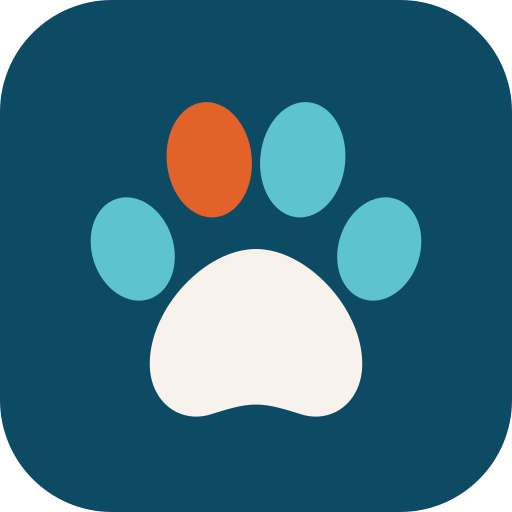
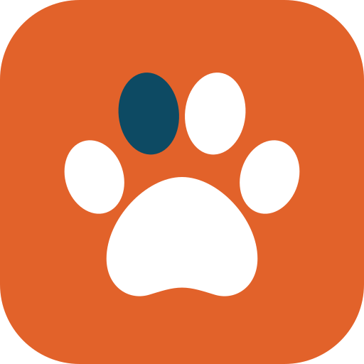

Smarter practice management for veterinary clinics
Do each thing once.
TriageIQ Vet is practice software for small-animal clinics with boarding, daycare and grooming. Every scan, check-off and signature feeds the invoice, the stock count and the record at the same time.
Invoice
Stock
Chart
Fully customizable, with a head start.
A new clinic never starts from a blank screen. Optional defaults are ready to go, and the choice of how to use them is yours.
Use them
Start with working defaults for discharges, medication information, service codes, inventory and reminders.
Edit them
Change anything to match how your clinic works, and leave the rest alone.
Create your own
Skip a default and build your own from scratch.
One scan does three jobs.
A clinic's day usually gets entered three times: once for care, once for billing, once for stock. TriageIQ Vet treats them as one event seen from different screens.
Charges follow the care
A scan or a check-off adds the charge, or skips it when the item is already in a bundle. The invoice is finished when the care is.
Stock stays right
Items are drawn by lot and expiry at treatment time, so the count on screen is the count on the shelf.
Missed scans stay visible
A hollow circle marks what still needs scanning, and the record shows it until someone scans it.
One record for the whole clinic.
Practice owners
Every scan and check-off becomes a charge, so less revenue slips away and stock stays right without nightly counts.
Medical directors
Doses, maps, treatment sheets and monitoring in one record, with the whiteboard built from the care itself.
Hospital managers
Pre-built user groups, shifts and templates. Set things once and every device follows.
Front desk
Book, check in with the signature pad, check out and refund a single line, accessible from every screen.
Kennel staff
The whole boarding week on one screen, and daycare added in two clicks.
About
Smarter practice management for veterinary clinics.
I've spent 18 years in the veterinary industry. I started as a daycare attendant, then worked as a technician, a zookeeper, and in emergency and specialty surgery. In my corporate roles, I worked with a wide range of practice management systems and implemented them from start to finish.
TriageIQ Vet comes from seeing that software from both sides: on the floor using it, and in the room setting it up. It's designed around real clinic workflows, so a task done once counts everywhere it matters.
The first goal is simple: run one clinic's full day, prove it beside the old system, then open it to other clinics.
TriageIQ Vet is in development.
The first version is planned as a pilot that runs one clinic's full day. Join the early access list to follow along.
Product
Built around a clinic workflow.
Everything below reads and writes one shared record. This page describes the planned product.
Fully customizable, with a head start
Optional defaults give every clinic a working setup on day one. Use them, edit them or create your own.
- Discharges. Default instructions for common surgeries and visits fill in the patient and clinic details.
- Medication information. Start from ready-made sheets for your clients.
- Service codes. Begin with a working list instead of an empty price list.
- Inventory. Start with default items and adjust them to what you stock.
- Reminders and standard of care. These load with the species, and each patient only shows the reminders it has actually had.
- User groups come pre-built. Front desk, technician, DVM, lead, billing and managers start with sensible permissions. Copy one to make a custom group.
- Restore defaults undoes mistakes. You can experiment with user groups and get back to where you started.
- Appointment kinds are ready to book. They come with colors, check-in forms and online-booking rules, and you can add your own and change the order.
- Every screen opens on what's usual. Set the default calendar view, printers and lock-screen time once.
Inventory that counts itself
Stock is drawn the moment a tech scans a consumable at treatment time.
- Scan to fill the details. A barcode scan fills the product, lot, expiry and serial number.
- One button for every other movement. Receive, in-hospital use and wastage sit behind the box icon on every page.
- Costs protect margins. A supplier price rise over the clinic's limit lands on a review list before it changes a fee.
- Controlled drugs tracked by bottle. Every draw is logged and checked against counts, and waste needs a witness. Only the Medical Director verifies receipts.
- Reports for inspection. The controlled-drug log runs for any date range, split by schedule.
Doses worked out from today's weight
Pick the drug and the mL to draw appears on the line and on the label. Nobody does mg/kg arithmetic on a sticky note.
- Emergency doses are ready first. The monitoring sheet lists each ER drug already calculated for this patient.
- One dose starts the schedule. A drug given in surgery prefills the start of its follow-up doses.
- Prescriptions carry their history. Refills left, expiry and the original prescriber follow every refill.
A whiteboard built from the work itself
SOAP sections check off as they are filled, and treatment-sheet tasks turn red the minute they are late. There is no color code to learn: Mark critical puts a patient on top, and everyone else is in check-in order.
- Any combination of boards. Appointments, ER, surgery, isolation, inpatient, boarding and grooming.
- Marking done charges and draws stock. The treatment sheet does the billing as care happens.
- Monitoring sheets. Anesthesia records and ER doses feed the treatment sheet. Tap the next time box to record a vital.
A medical record that protects itself
Write the SOAP from a template or by voice. Dictation recognizes what is medically relevant and places each part in the correct area.
- Signed, then permanently locked. A signed SOAP can be unlocked until the permanent lock. After that, changes are addenda with an author and a time, never edits.
- Body, eye and dental maps. Saved into the record by species and carried to the next visit.
- See who else is working. When someone is on the same SOAP, their changes appear as they make them.
- Certificates. Spay/neuter, domestic and international health certificates fill from the patient record for a DVM to approve.
- Signed records are never erased. They are corrected with addenda, and every change has an audit entry.
A calm front desk
Scheduling, check-in, messages and checkout, accessible from every screen.
- Calendar by resource. A column per doctor, room, imaging or groomer, with drag to reschedule and side-by-side double-booking.
- Online booking. Clients book within your rules, and requests arrive for review.
- Hold a time for 24 hours. Offer a client a time and hold it while they decide. Online booking can't take it, and an unconfirmed hold clears itself.
- A waitlist that fills openings. See who's waiting, most urgent first, and drag them onto an open time to book.
- Two-way texting and email. Every client message is saved on the client. Texts go only to clients who agreed.
- Price lookup on every page. It shows the total with fees, and builds an estimate as you go.
- Simple end of day. Card payments come over automatically. Staff count the rest, and a difference creates a task to check it.
Boarding, daycare and grooming in the same record
A boarder's meds, baths and vaccines never live in a separate binder.
- A whole stay on one screen. The week, with each day's services, activities, notes and charges.
- Recurring care in one step. Walks, feeds and own-medication doses are added once for the stay.
- Admission forms fill the record. The signed form supplies the emergency contact and the can't-reach treatment limit.
- Daycare in two clicks. Vaccines are checked and capacity updates.
- One checkout. Boarding, grooming and medical invoices are paid together, each kept as its own invoice.
Reports that answer the question you asked
Type a question in plain words, or open a built-in report. Every answer shows the records behind it, so nobody has to rebuild the numbers in a spreadsheet.
- Ask in plain words. “How much did we invoice each month this year?” comes back as a chart, a summary and the invoices for each month.
- More than 25 built-in reports. Revenue by month, production by provider, daily close-out, reminder compliance, lapsed clients, inventory expiring and the controlled-drug log.
- Against last year. Revenue and production show the same period last year and the change.
- Click to see why. A bar or a row opens the invoices, items or patients behind the number.
- Save, share or export. Save a report to run again, share it with coworkers or user groups, or export it to a spreadsheet.
Templates that attach themselves
One search page holds every kind of template, so staff learn one place.
- Added automatically. A spay bundle brings its discharge, its tasks and its estimate lines with it.
- Real formatting. Bold, italic, underline and lists, plus autofills for the patient, client and doctor.
- Every PDF looks like the clinic. Logo and clinic details first, then client and patient, then the content.
- One base treatment sheet. Customized on each patient, so the template list never sprawls.
Apps
Two apps, one record.
A Clinic App for your team on tablets and phones, and a Client App for pet owners. Both read and write the same record as the desktop.
Planned for the first six months after the first release. Recorded in the TriageIQ Vet prototype with sample data.

Clinic App
For staff on a tablet or phone, on the floor and in the kennels.
- Unlock with your PIN. Any staff member's PIN unlocks it and switches to them. It locks itself after the idle time.
- Next Up. Everyone's coming appointments for the day, with patient alerts.
- The whole SOAP. Start it from the appointment and fill every section, vitals included.
- Whiteboard and treatment sheets. The same live hospital board as the desktop.
- Inventory by scan. Receive, in-hospital use, wastage and the want list.
- Calendar at a glance. The day by resource, view only.

Client App
For pet owners, with your clinic's name on it.
- Easy first sign-in. Scan the QR code at the front desk, or use the client ID and a code texted to the number on file.
- Every pet in one place. Vaccines, care due, history, labs, prescriptions and weight.
- Book care that's due. Request a visit for one pet or several, at open times only, within your booking rules.
- Reschedule or cancel. Cancelling less than 24 hours ahead is recorded as a non-exempt 24-hour cancellation.
- You confirm. Requests wait for staff, and the client gets a text when it's booked.
Switching
Move over with minimal interruption.
Your TriageIQ Vet Deployment team works with you from setup through post-launch support, and client and patient IDs stay the same as your old system.
The planned move
Meet with your Deployment team weekly
Learn the system and set up your site together, starting from working defaults for service codes, inventory, templates and more.
Train your team in a test environment
Every user group practices on test data before anything goes live.
Do a full inventory count
Your opening stock counts match what's on the shelf from the first day.
Final migration over a weekend
Client and patient counts, open balances and every controlled bottle are reconciled. Older records move as read-only history.
On-site training the morning of go-live
Your Deployment team is at the clinic to train your staff that morning.
Go live with check-ins
Your Deployment team checks in with you, with a same-day fix path for anything blocking checkout, prescriptions or controlled drugs.
What it's being built to meet
These are the requirements written into the development brief. They describe the goal, and they will be confirmed before launch.
Your data stays yours
US hosting, encryption in transit and at rest, nightly backups, and a full export of your data on request.
Access by job
User groups come pre-built. A person can be granted or denied a single permission, and every change is written to a log that nobody can edit.
Fast on a busy day
The target is search results under 300 ms at 50,000 patients.
Roadmap
First release
- Staff web app, lock screen and PIN switching
- Online booking and client portal
- Card payments, email, two-way texting and labs
First six months after
- Clinic App for tablet and phone
- Client App
- Multiple locations
Later
- Herd and production animals
- Ambulatory app that works without signal
- Universal client
Thinking about switching?
Tell us what you use today and what you'd change first.
Early access
Follow the build.
TriageIQ Vet is in development and isn't available to buy yet. Join the list and we'll share progress as the pilot takes shape.
Questions or want more information? Email info@triageiqvet.com.
Free trial
Try TriageIQ Vet free for 14 days.
Request a 14-day free trial in a test environment and work through your clinic's day, starting from the optional defaults. TriageIQ Vet isn't fully developed yet, so expect some parts to still be in progress. The trial doesn't include integrations, so card payments, labs, email and texting aren't connected.
Can we use TriageIQ Vet today?
Not in a live clinic yet. It's in development, and a pilot comes first. You can request a 14-day free trial in a test environment, but it isn't fully developed yet.
What kind of clinic is it for?
Small-animal clinics, including those with boarding, daycare and grooming. Herd and production animals come later.
Can we keep our records?
That is the plan. Live data moves with original client and patient IDs, and older records move as read-only history. How much moves depends on what your current software can export.
What do we need at the clinic?
TriageIQ Vet runs in a web browser. Plan for an internet connection with at least 50 Mbps download speed and 20 Mbps upload speed. You'll also need barcode scanners, label printers and card terminals, and our team will go over which ones work best for your clinic.
What does it cost?
Pricing hasn't been set.
Is our data safe, and who owns it?
Your data is yours. TriageIQ Vet is being built with US hosting, encryption in transit and at rest, and nightly backups, and you can get a full export of your data on request.
How long does switching take?
The goal is two options: an 8-week or a 12-week move, from your first meeting with your Deployment team to go-live.
What training and support do we get?
Your Deployment team meets with you weekly to set up your site, your staff practices in a test environment, and the team trains your staff on site the morning you go live, then checks in with you after. TriageIQ Vet will also have a searchable Help Center on our website, with detailed step-by-step instructions for every workflow and what each term means.
What happens if our internet goes down?
TriageIQ Vet runs in a web browser, so you can keep working from a phone hotspot or on personal devices until the clinic's connection is back.
Which integrations will it have?
The first release is planned to connect card payments, email, two-way texting and labs.
Can we change the templates, forms and service codes?
Yes. Use the optional defaults, edit them, or build your own.
How are controlled drugs handled?
Every bottle is tracked, and every draw is logged and checked against counts. Waste needs a witness, only the Medical Director verifies receipts, and the controlled-drug log runs for any date range for inspections.
Can clients book online or use an app?
Online booking and a client portal are planned for the first release, and the Client App within six months after.
Does it work on tablets and phones?
The Clinic App for tablets and phones is planned within six months after the first release.
Can we have more than one location?
Not yet. Multiple locations are planned for the future. For now, each location runs as its own clinic.
What happens to the data in our free trial?
The trial runs in a test environment, so it should never hold real client or patient data.